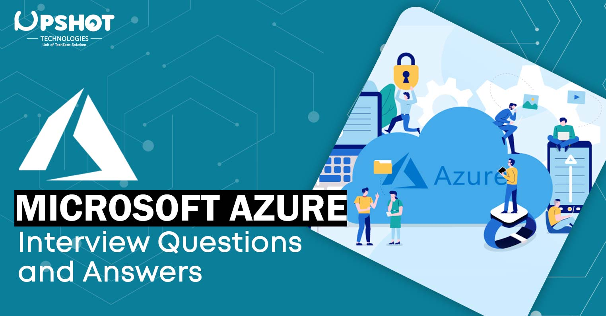

Azure Interview Questions and Answers

1. What is Azure?
Azure, which was launched by Microsoft in Feb 2010, is a Cloud storage application. It offers the creation , storage, networking and management of operation of a highly versatile Community platform.
2. What does cloud computing mean?
Cloud computing is a concept that applies to online storage and computer connectivity. It does not contain data on your computer's hard disk. You may view knowledge from a central server through big data.
3. What is Paas platform ?
PaaS is a system infrastructure that contains a framework, language programming environment, repositories and online services. The Azure resources of this kind are used by developers and cloud providers.
4. What are cloud computing benefits?
The system's functionality will be modified if the client needs such improvements. They are widely accessible, through their end consumers with any inch. The machine can withstand and resolve errors in a single component by staying completely functional. You will pay even while the machine is in use. If you use the device, you can quickly uninstall it and have the charge saved. The program illustrated instead of spending on the equipment, how to compensate for the service.
5. What does SaaS and Iaas Mean?
SaaS stands for Software as a service lacking applications for network architecture and could be used through direct buying. IaaS stands for Infrastructure as a Service that allows you to have the customer's equipment as a service supplier that the customer can install.
6. Explain different models for cloud deployment?
Private cloud deployment model- You maintain the network, so the cloud vendor will selectively use the software. The Private Cloud delivery model.
Public Cloud Architecture Platform- It offers the multi-renter network solely through the service provider.
The Hybrid Cloud Architecture Model- It comprises intermixed public and private resources that are used to share confidential knowledge on the official platform
7. What is the function of Azure cloud service?
The program is supposed to host the development companies and control the operating context framework at the same time. The usage of data processing is considered the "server function," although context processing is referred to as the "job position."
8. What are roles in Azure?
Cloud management roles are often called nothing as a server that is linked to the administration and balance of the platform as a collaborating time of the system for the purpose.
9. What is a window azure platform?
It is jointly a PaaS that has been created by Microsoft to operate an application and the data center runtime to manage the cloud.
10. What is SAS?
SAS is a Statistical Analysis System abbreviation that is a software suite which performs analyzes of several variables. It has to do with forecasting analysis , data processing, analytical tools, or enterprise intelligence. It generates a smooth functionality that offers a visual result based on clicks. It is user-friendly with the added technologies for both the technical or non-technical.
11. Explain API in Azure
The Test Analytics in API is a web-built Azure learning tool. This is an important tool for processing unstructured data such as extracting the key paragraph. It operates with the binomial rating function of 0 or 1 where 1 represents a positive and 0 is comparable to a negative point of view. The downside is that there is little need for assistance with the design and preparation that ensures it is immediately accessible to the customer.
12. What is meant by Diagnostics in Azure?
Windows Azure Diagnostic has computer data management capabilities. Azure holds a few other diagnostic data in the table and some in a blob. The test console is operating for the compilation of data for a position case both in Windows Azure and in a device simulator.
13. What are the applications of Azure?
Microsoft Azure's most relevant features are network tools, smartphone phones, online software, cloud resources, computing facilities, media services, and so on.
14. Explain Migration Assistant tool
The Migration Assistant tool lets you test the deployment of your IIS. This lets you determine which location may be transferred to the cloud. This has modules either not transferred or not enabled on the Azure cloud.
15. What is an Azure Active Directory?
The Identifying and Access Control Program is the Microsoft Active Directory. The working folders are quite close. It enables you to give your employees access to individual network goods and facilities.
16. What does Auto Scaling mean in azure?
Scaling for additional instances is also referred to as Auto scaling. Windows Azure also embraces the scale-up by utilizing bigger functions instead of smaller positions. By inserting and expelling functions on our Windows Azure framework during service, we will adapt to the expense of operating the program.
17. Explain SQL Azure databases?
The SQL Azure database is a cloud-controlled method, where your file can be stored. Microsoft Azure is the best way to use PaaS for a similar account with different databases.
The specific SQL Server feature, that is, high usability, flexibility and core protection, is present in windows Server Azure. A server with an aspect of Microsoft Azure SQL, it automatically backs up any active database. The 1-hour recovery point (RPO) for Geo-Restauration is continuously assisted and geo-repeated.
18. Explain table storage in Azure
Windows Azure Filing Table Service holds lots of details coordinated. Windows Azure tables are suitable for structured, non-relation data storage. A table is an object list. Tables may not endorse a specification for elements suggesting that a single table may produce entities with distinctive properties arrangements. There may be many tables in a document.
19. Explain features in windows azure
●Designers can build pages using ASP.NET, PHP and others use Websites such as FTP, Git etc. Such pages may also be submitted.
●SQL database, formalized as the Azure database is used by Microsoft SQLServer to build, extend and scale the framework to the cloud
●This is the multilevel technology service and automatic implementation of a multi-level framework.
20. What is meant by Windows Azure Portal?
To execute an application, a client logs into the Windows Azure cloud portale using the Windows Live ID from his/her computer software. Around that stage the customer determines if he/she should build a host account for operating the device, store data or both. When a host account is available, the developer can send applications on Windows Azure using a Windows Azure portal.
21. Explain storage key in Azure
As authentication mode, storage keys or authorization keys are used for controlling the storage services account to manage data according to our requirements. In Windows Azure, given the fact we use a single access key to validate our application in the shop, we have an option to have a main access clave and secondary access key. The main justification for providing the secondary control key is to prevent the program maintenance.
22. What does profiling mean in Azure?
Profiling is just a testing tool for an application's output review. This is typically carried out to ensure that the program is reliable enough and excessive traffic is preserved. Visual Studio offers us various tools to do so by collecting the app output knowledge, which can also solve problems.If the wizard profile is performed, the sessions will be generated and the sampling frame will be retrieved.
23. Explain Windows Azure Traffic Manager
It helps users to monitor the delivery of deployed Azure cloud services' app traffic. Azure offers three distinctive strategies for load balancing. The Traffic Manager applies a DNS queries forwarding directive to your web addresses and layouts the DNS courses to the situations that are appropriate for your application
24. What form is federation used in Azure?
Federation supports information scale, both managers and developers. It allows administrators to organize and redistribute knowledge in an easy way. It helps programmers on the networking and knowledge exchange side. It helps to route without rest time.
25. What is Hybrid cloud in Azure?
A hybrid cloud is a combination of both proprietary and public cloud infrastructure, a mixture of a corporate party and the usage of cloud resources. A sort of cloud is better fit for holding confidential documents in the area (private cloud) and using alternate public cloud resources.